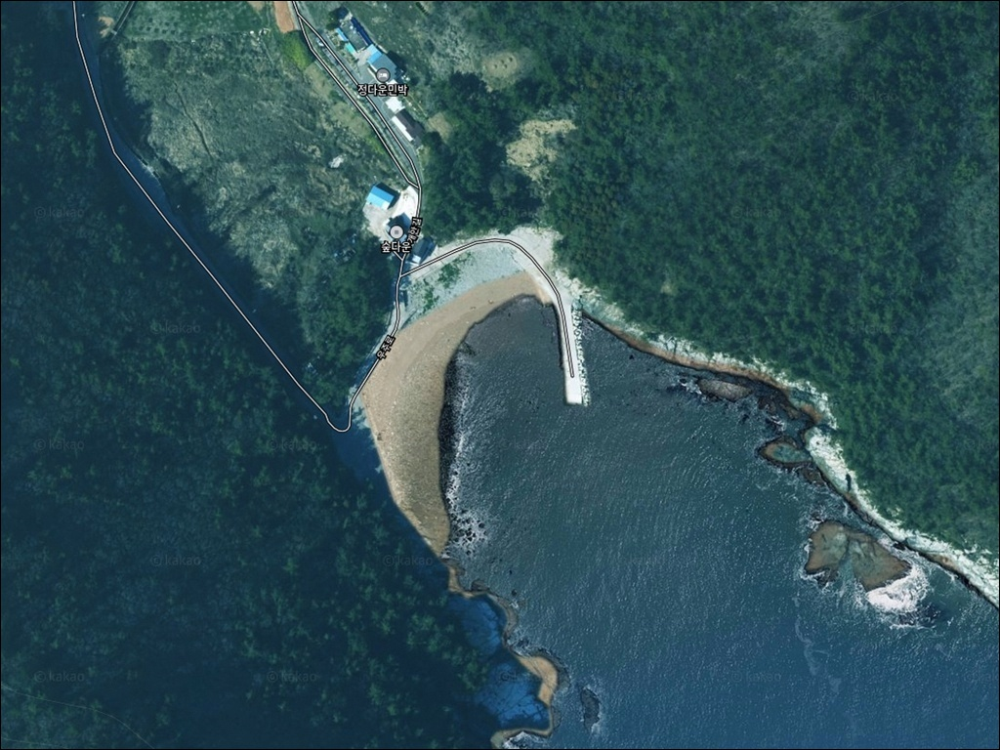
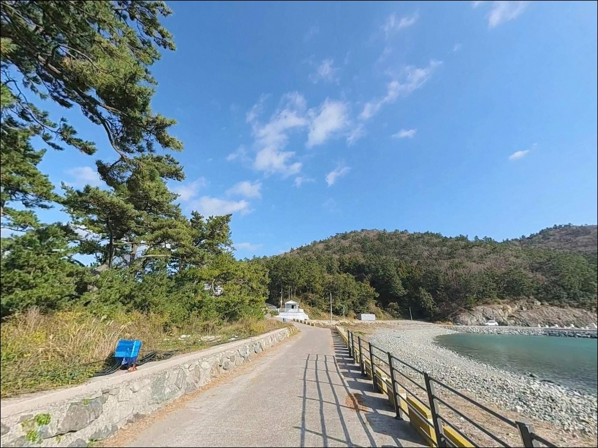
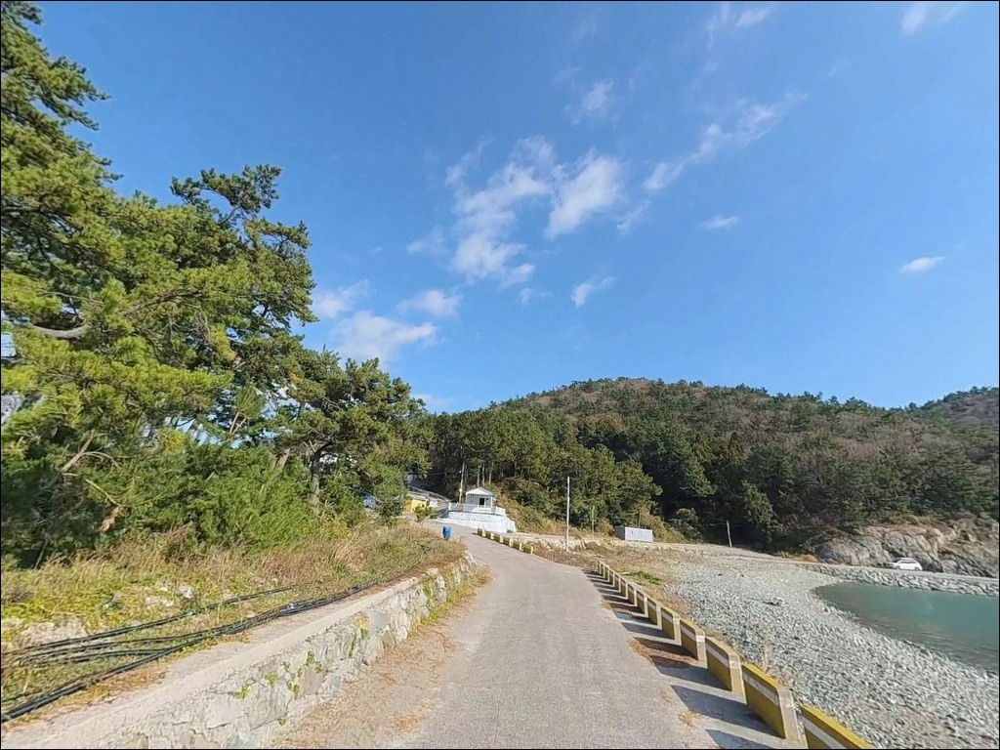
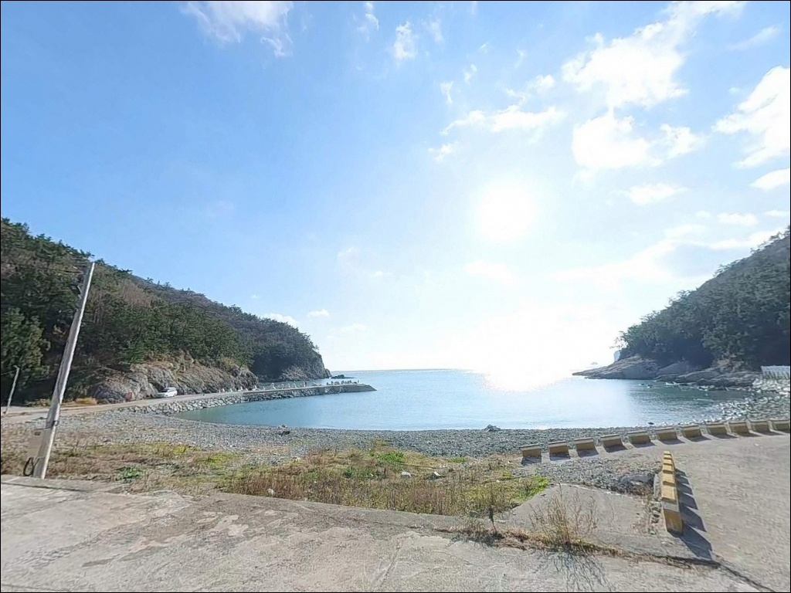
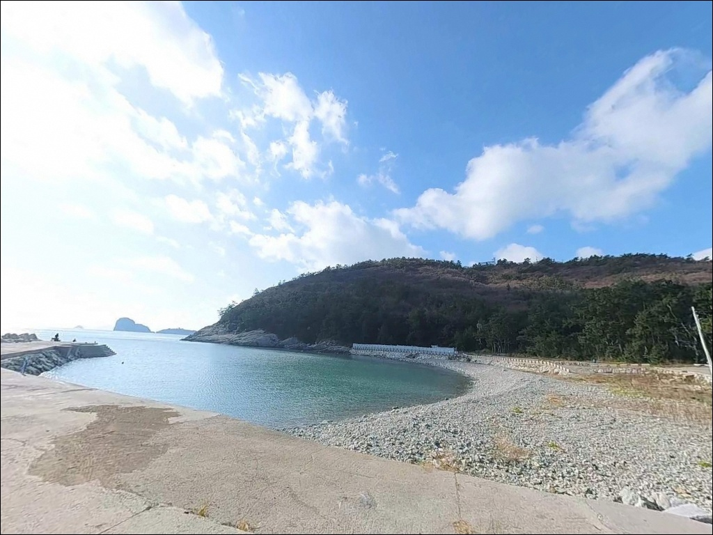
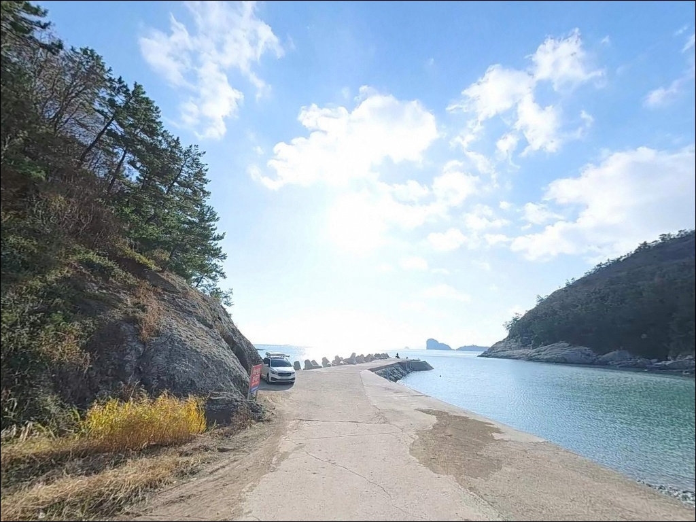
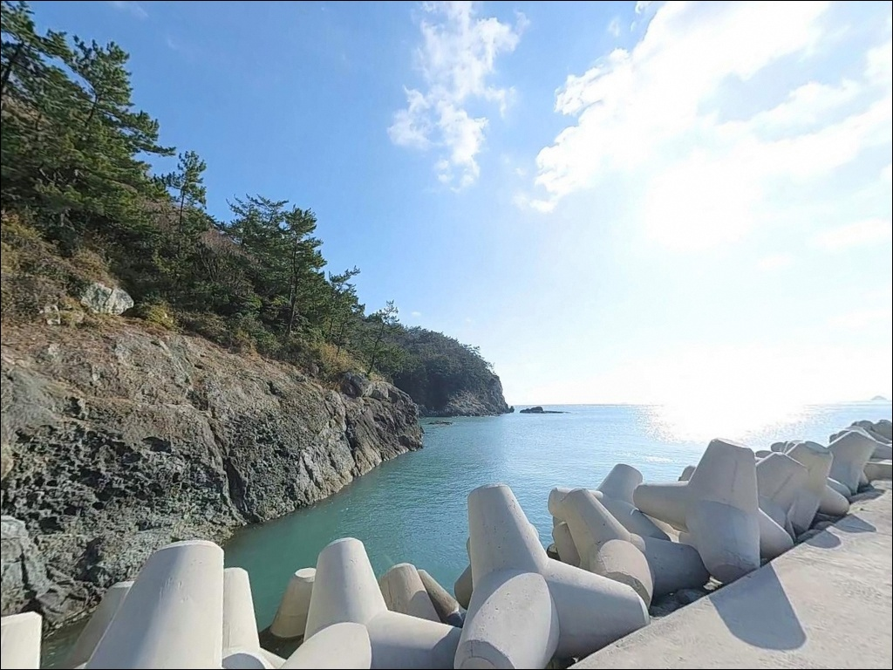
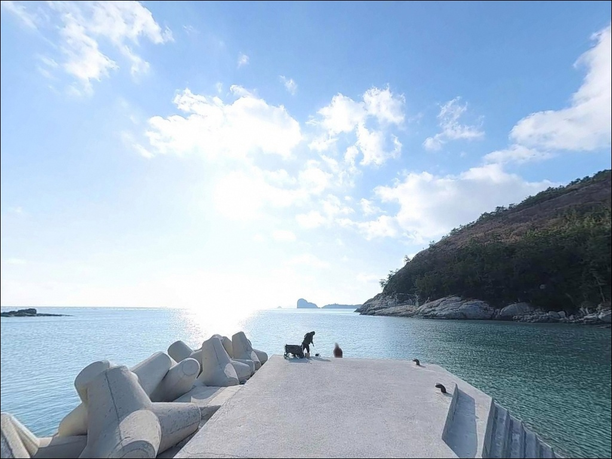
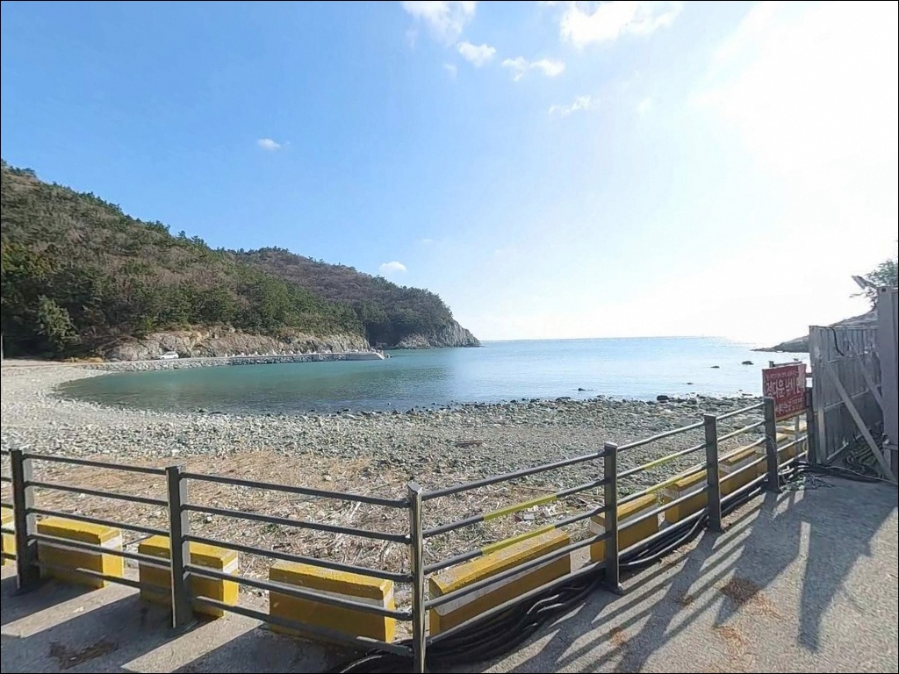

간조엔 자리 사라지는 외나로도 외초리선착장, 만조 전후 노린 갑오징어 에깅
이 페이지에는 광고(제휴 링크 포함)가 있으며, 광고 링크를 통해 구매하면 운영자가 판매 수익 또는 수수료를 받을 수 있습니다. 포인트 사진: 카카오맵 스카이뷰·로드뷰. 이 페이지의 지도·사진 이미지는 카카오맵의 실제 서비스 이미지와 다를 수 있습니다.


포인트 안내
외초리선착장
전남 고흥군 봉래면 외초리 87-5
나로도 해역은 연안 수심이 얕아
간조 전후에는 선착장 앞 낚시 자리가
실질적으로 사라지는 구조입니다.
물때를 맞추지 않고 도착하면
채비를 풀기도 전에
타이밍을 통째로 날리는 상황이 됩니다.
전남 고흥군 봉래면 외초리,
외나로도 남단 소형 만(灣)에 자리한 선착장입니다.
방파제와 테트라포드가 파도를 막는 구조로
만 내부는 비교적 정온한 수면이 유지되며,
국립해양조사원 갯바위 포인트 자료에
외나로도 외초항 서쪽 방파제로
공식 등재된 곳입니다.
이 글은 외초리선착장의
진입 동선, 차박 여건, 물때 판단 기준,
낚시 스타일별 공략 조건에 집중합니다.
조황 단정이나 특정 어종 보장은
이 글의 범위에 포함되지 않습니다.

1. 진입 동선과 포인트 접근성
외초리선착장으로 가려면
나로2대교(연도교)를 건너 외나로도로 진입한 뒤
섬 남단 방향 해안 도로를 따라야 합니다.
봉래면 소재지인 신금리에서
하촌 방향 진입로는 왕복 2차선에서
1차선 수준으로 좁아지며,
급커브와 오르내림이 반복되는
해안 산악 도로 구간이 이어집니다.
대형 캠핑카나 카라반은
진입 자체와 회차 모두 제한적인 구조입니다.
승용차나 소형 SUV 기준으로 접근에 적합하며,
대형 차량이라면 출발 전
위성지도로 도로 폭과 회차 가능 구간을
반드시 먼저 확인해야 합니다.
2026년 현재 나로도 일부 구간에 도로 확장공사가
진행 중이어서 우회 구간이 발생할 수 있습니다.
선착장 입구 공터와 방파제 진입 전 도로 갓길이
주차 후보지로 파악됩니다.
가용 대수는 2~4대 수준으로
주말 성수기에는
일찍 도착하는 편이 유리합니다.

2. 차박 환경과 야간 체류 여건
외초리 마을은 민가 밀집도가 낮은
소규모 어촌입니다.
차량 통행이 드물고 야간 소음이 적어
차박 프라이버시는 상대적으로 양호한 편입니다.
다만 선착장 자체 조명이 부족하고
마을 가로등 외 인공 조명이 제한적이어서
개인 랜턴은 필수입니다.
외초리선착장이 속한 봉래면 일대는
다도해해상국립공원으로 지정된 구역입니다.
지정 장소 외 야영·취사는
원칙적으로 허용되지 않습니다.
차박 목적으로 방문한다면
출발 전 국립공원 야영 허용 여부를
관할 기관에 먼저 확인하는 것이
가장 안전한 준비입니다.
낚시 후 간단히 대기하는 용도로는
주차 공간이 좁아 여건이 넉넉하지 않습니다.
차박을 메인으로 계획한다면
반경 10km 내 대체 후보지를
미리 확인해 두는 편이 현실적입니다.


3. 주변 편의시설 및 인프라 현황
외초리선착장 반경 3km 이내에는
편의점이나 마트가 없습니다.
식당이나 주유소도 기대하기 어려운 환경으로,
식수·연료·낚시 소품·비상약품 모두
출발 전에 완비하는 것이 기본입니다.
봉래면 소재지인 신금리 방향으로 이동하면
기본적인 식당과 소형 상점을 이용할 수 있습니다.
나로도항(신금항) 일대에는
수협 위판장, 낚시 전문점, 식당이 다수 있으며
미끼·채비 보충이 가능한 거점입니다.
해당 선착장에서 차량으로
약 15~20분 거리에 해당합니다.
응급 상황 발생 시 고흥읍 방향까지
이동 시간이 상당하므로
비상 연락처와 인근 보건지소 위치를
출발 전 확인해 두는 편이 좋습니다.

4. 진입 전 반드시 챙겨야 할 준비사항
외초리선착장 방문 전
가장 먼저 확인할 것은 물때입니다.
나로도 일대는 연안 수심이 전반적으로 얕아
간조 전후에 낚시가 불가능해지는 구간이 발생합니다.
바다타임에서 봉래면 기준 물때를 확인하고
만조 전후 2~3시간에 집중해
출조 시각을 맞추는 것이 핵심입니다.
외나로도 남단은 기상 변화가 빠른 편입니다.
바람과 파고 예보는 당일 아침에 재확인하고,
파고 1m 이상 또는 풍속 14m/s 이상 예보 시에는
출조를 재고해야 합니다.
방파제 끝단과 테트라포드 구간은
바닥이 미끄러운 편이어서
논슬립 신발 착용과 구명조끼 착용은
기본 매너입니다.
마을 선착장 구조상 어선 접안 동선이 있습니다.
어구나 로프에 채비가 닿지 않도록
자리를 잡는 것이 이 포인트의 기본 예절이며,
야간에는 반드시 헤드랜턴을 사용해야 합니다.
또한 봉래면 일대 최신 조황은
출조 전에 반드시 검색해 보시기 바랍니다.

5. 지형 기반 낚시 여건 분석
외초리선착장은 외나로도 남단의
소형 만(灣) 안에 자리 잡고 있습니다.
선착장 기준 좌측(서쪽)에 방파제,
우측에 테트라포드가 배치된 구조로
만 내부는 파도 영향이 상대적으로 적고
수면이 비교적 정온하게 유지되는 편입니다.
바닥 지형은 뻘과 모래가 섞인 사질대와
곳곳에 수중 여가 혼재된 구조입니다.
수심은 간조 시 2~3m,
만조 시 5m 안팎으로 변화하며,
방파제 말단과 테트라포드 연접 구간이
수심 변화가 집중되는 핵심 구간입니다.
만 구조 특성상 조류 유입은 제한적이지만,
들물과 썰물의 방향 변화 지점에서
어류 집결이 기대되는 지형입니다.
방파제 외항 쪽 끝단은 조류 영향을 직접 받아
루어 반응이 살아나는 자리입니다.
나로도 일대 해역은 암반과 모래가 혼합된
전형적인 고흥권 해저 구조로,
감성돔·볼락·노래미·도다리·숭어·갑오징어·문어 등
다양한 어종을 기대해 볼 수 있는 해역입니다.
가을~초겨울 시즌이 감성돔과 갑오징어 모두
활황기에 해당합니다.
최신 조황은 가기 전에 꼭 검색해 보시기 바랍니다.


6. 간조를 피하면 달라지는 외초리선착장 낚시 스타일
에깅이 이 포인트에서 가장 잘 맞는 낚시입니다.
나로도 전역이 갑오징어 에깅 권역에 포함되며
외초리 해역도 같은 조건 안에 있습니다.
방파제 끝단과 테트라포드 주변이
핵심 공략 구간이며,
만조 전후 야간 타이밍이
에깅 반응이 살아나는 조건입니다.
바닥층을 천천히 긁는 운영 방식이
이 포인트 지형에 유리합니다.
원투낚시는 방파제 위에서
외항 방향으로 구사하는 것이 기본입니다.
나로도 일대 모래·암초 혼합 지형에서
기대할 수 있는 어종이 다양하며,
물색이 맑은 날 만조 타이밍에
다단 채비로 바닥 변화 구간을 넓게 공략하는
방식이 이 포인트 구조에 맞습니다.
볼락 루어낚시도 충분히 노려볼 만합니다.
테트라포드 주변 락피시 공략에 적합한 지형으로,
방파제 기둥과 테트라포드 틈새를
지그헤드 채비로 수직 탐색하는 방식이 유효합니다.
야간에 집어등을 활용하면
집어 효과가 뚜렷해지는 편입니다.
찌낚시는 만 내항의 잔잔한 수면을 활용해
선착장 끝단에서 외해 방향으로 흘리는
방식이 어울립니다.

7. 대안 포인트와 플랜 B 동선
외초리선착장 여건이 여의치 않을 때
첫 번째로 이동할 곳은
염포항(중촌방파제) 일대 갯바위입니다.
같은 외초리 해안선 안에 위치하며
차량으로 5분 내외 거리입니다.
원투낚시와 에깅 모두 대응 가능하고
조황 자료도 나로도 권역에서
비교적 많이 확인되는 대안입니다.
한 단계 더 이동이 가능한 상황이라면
나로도항(신금항) 방파제가 기본 선택지입니다.
외초리선착장에서 차량으로 15~20분 거리이며,
방파제 규모가 크고 수심이 깊어
어떤 낚시 스타일로도 운용이 가능합니다.
미끼·채비 보충과 식사가 같은 동선에서
해결되는 거점이라는 점도 강점입니다.
녹동항 방향으로 이동하면
대형 방파제와 다양한 낚시 인프라가 갖춰진
고흥 대표 포인트를 이용할 수 있습니다.
감성돔 낚시 대회가 열릴 정도의 검증된 곳으로
외초리선착장이 여의치 않을 때
최종 대안 거점으로 활용할 수 있습니다.

물때와 준비를 갖춘 낚시꾼에게
외초리선착장이 맞습니다
에깅이나 원투낚시를 즐기는 낚시인이라면
외초리선착장의 지형 구조는
잘 맞는 조건입니다.
방파제와 테트라포드, 수중 여가 함께 있는
복합 지형에서 여러 낚시 방식을
한 자리에서 시험해 볼 수 있습니다.
반면 물때 계산 없이 간조에 도착하거나
편의시설을 기대하고 간다면
낭패를 보기 쉬운 포인트이기도 합니다.
만조 전후 타이밍, 자급 준비, 국립공원 야영 확인,
이 세 가지가 이 포인트를
제대로 쓰는 조건입니다.
조용한 외나로도 마을 선착장에서
물때를 맞춰 낚시 자리를 잡고
하룻밤 머무는 계획이라면,
국립공원 야영 허용 여부 확인 하나만
미리 해두어도
낚시와 차박 모두 조용히 즐길 수 있는 곳입니다.